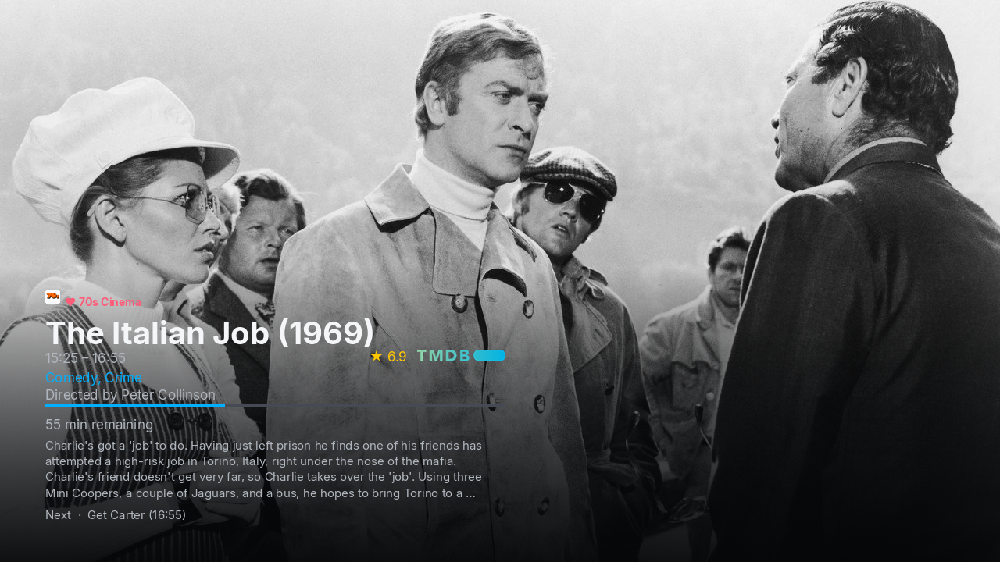

tvdinner plays M3U/M3U8 IPTV playlists — or logs straight into an
Xtream Codes panel, a Stalker Portal, or an HDHomeRun tuner, or
browses a Plex Media Server's library, or plays a local movie
file or YouTube URL directly — through mpv, with a
TiviMate-style on-screen EPG overlay and a full program guide
built from your XMLTV data — channels, timeline, poster art,
favorites, DVR-style recording, and more, all from the terminal.
Latest release: — ·
also runs from source on Linux/Windows via pip install .
Features
Everything a real set-top guide has, in your terminal
tvdinner isn't just "play this URL" — it builds a proper viewing
experience around whatever playlist and EPG you already have.
Full program guide
A TiviMate-style grid: channels down the left, a scrollable
timeline across the top, and a live "now" marker so you always know
where you are.
On-screen EPG overlay
Current/next programme info on every channel switch, with poster
art, a live progress bar, and video/audio quality badges — resolution,
codec, fps, HDR.
Smart EPG matching
Falls back through tvg-id suffixes and normalized display names to
match real playlists against real guides, plus clock-shift correction
(global or per-channel) for feeds with wrong times.
Favorites
Mark any channel with a heart from the guide or while playing, and
jump straight to a favorites-only view whenever you want it.
Filter by name or group
Type to filter the guide by channel name or category — including
playlists that tag one channel under several groups at once.
Bookmarks
Save playlists with an optional EPG URL and default channel, then
launch any of them from an interactive picker instead of retyping a
URL.
Xtream Codes login
No M3U export needed — give tvdinner your Xtream Codes username,
password, and panel address directly and it fetches the live
channel list and EPG for you.
Stalker Portal login
Also speaks Stalker Portal (Ministra) — the protocol MAG
set-top boxes use. Give tvdinner your portal address and MAC and
it logs in and fetches the live channel list directly.
HDHomeRun tuners
Point tvdinner at an HDHomeRun network tuner's address on your
LAN and it fetches the live channel lineup directly — no login,
no separate M3U export. Pulls in guide data too, for tuners with
a HDHomeRun DVR subscription.
Plex Media Server
Browse a Plex server's movie and TV libraries right from
tvdinner, poster art and all — drill into shows, seasons, and
episodes, search the whole server at once, and play with a
poster/synopsis/progress overlay, direct from the file.
Local video files
Point tvdinner straight at a movie file on disk and it plays
directly, no playlist involved — its identity is guessed from the
filename, and a TMDB token turns on the same poster/synopsis/
rating overlay every other source gets.
YouTube playback
Play a plain YouTube URL through mpv's own yt-dlp integration,
info overlay included — title, uploader, and thumbnail come free
from YouTube itself, plus an optional TMDB-powered poster/
synopsis/rating for videos that turn out to be a real movie.
Backup & restore
Back up EPG shifts, favorites, and bookmarks into a single archive
for safekeeping or moving to a new machine, and restore them just as
easily.
Pause & rewind live TV
Pause a live channel and it keeps buffering in the background —
resume (or rewind/fast-forward within a configurable window, 10
minutes by default) right from where you paused, not the live
edge.
Hardware decoding & high-quality scaling
Hardware video decoding turns on automatically wherever mpv
considers it safe, falling back to software cleanly when it isn't,
and mpv's own high-quality gpu-hq scaling profile is
always on. Add a custom GLSL shader (Anime4K, FSRCNNX, etc.) or
motion interpolation on top with a flag — both fully opt-in.
Picture-in-picture
Shrink the window into a small always-on-top corner while you
use other apps, then bring it back to full size with the same
key.
Chromecast casting
Cast whatever's playing — a live channel, a VOD item, or a Plex
movie/episode — straight to a Chromecast device on your LAN with
one key. Local playback pauses while you cast, and resumes right
where it left off when you disconnect.
Record & watch back
Record any stream to disk on demand, or schedule a specific
programme straight from the guide — tvdinner switches channels and
starts/stops automatically, DVR-style, with a badge marking what's
queued and a dedicated view for everything upcoming. Browse past
recordings by date and play them back without leaving the app.
TMDB ratings
Opt-in gold star ratings on movie programmes in the guide grid
and details popup, sourced from TMDB and matched by title/year
-- fetched in the background and cached for weeks, so guide
rendering never waits on the network.
Remote-friendly
ENTER/MENU bindings work with cheap
IR/BLE air-mouse remotes, so tvdinner is just as comfortable on a
couch-facing HTPC as at a desk. A built-in keyboard-shortcuts
overlay keeps every binding one keypress away.
Cross-platform, open source
Native .deb/.rpm packages on Linux, and
a self-contained installer for Windows that bundles its own mpv,
plus MIT-licensed source you can read, fork, or contribute
to.
Screenshots
What it actually looks like
Real captures, not mockups.

Netflix-style backdrop hero
Full-bleed TMDB (or Plex) backdrop art behind the picture for a
"now playing" movie — rating, director, synopsis, channel logo,
and what's on next.
EPG banner overlay
Current programme, poster art, a live progress bar, quality badges,
and a favorited channel's heart marker.
Programme details
Full details for the guide's selected show — synopsis, category,
and poster art.
Guide filtering
Narrow the guide down by channel name or group in real time.
Bookmarks picker
Add, edit, and launch saved playlists without retyping a URL.
Install
Pick your platform
Every release ships native Linux packages and a self-contained
installer for Windows, built straight from
the same source.
🪟 Windows
A single installer that bundles its own mpv — no separate Python
or mpv install needed. Unsigned for now, so SmartScreen will show an
"unrecognized app" warning on first run.